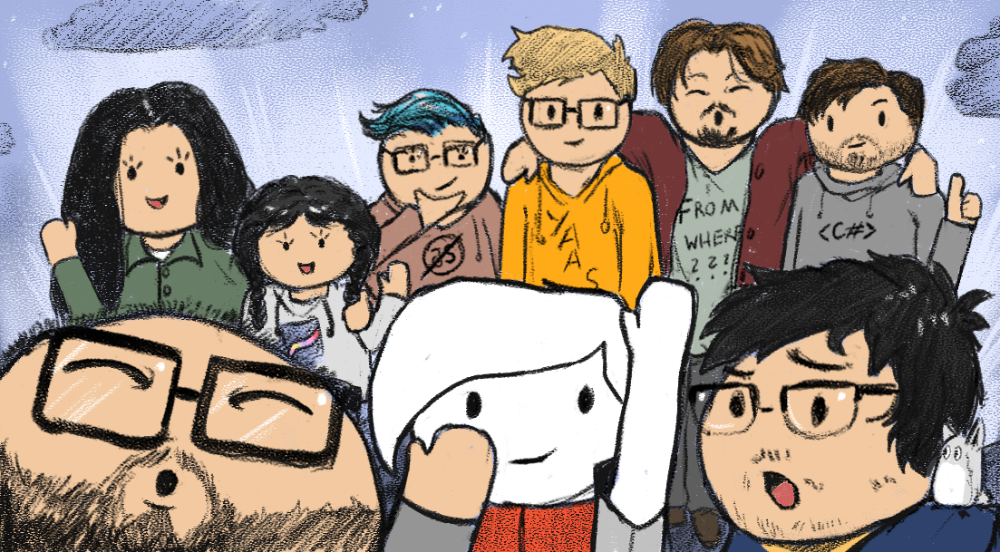

Ocean
Overview
Ocean was a Team Project, which was created within one semester by 8 students under the supervision of our teacher. The goal was to test, whether it was possible to create a game which can determine the player's personality type as accurately as a regular questionnaire can. For that, we based our story design heavily on scientific research about different personality evaluation theories, especially Goldberg’s Big-Five Factor Markers (1992).
Work Distribution
Since we only had around 4 months for this entire project, we split up into departments. While others
worked on the scientific research, the story design, or on creating all the assets, I was mostly only
working on the coding part.
This included creating a shader graph for the water, coding the
quest system and the map, and making the UI for both of these. Furthermore I was responsible for
creating our
Project Website.
The game was created with Unity and C#. For the website, our uni provided us with a markdown
template.
Before I worked on this project, I was already familiar with Unity. However, I still learned a lot
of new things in this time, e.g how to utilize Scriptable Objects and the Event System.
Links
For more information, visit our
Project Page or
Github Repository.
You can also try our game out yourself on
Itch.io, but be aware that the game is currently only available in German.
Gallery
(Mini Map feature had to be cut from final version)